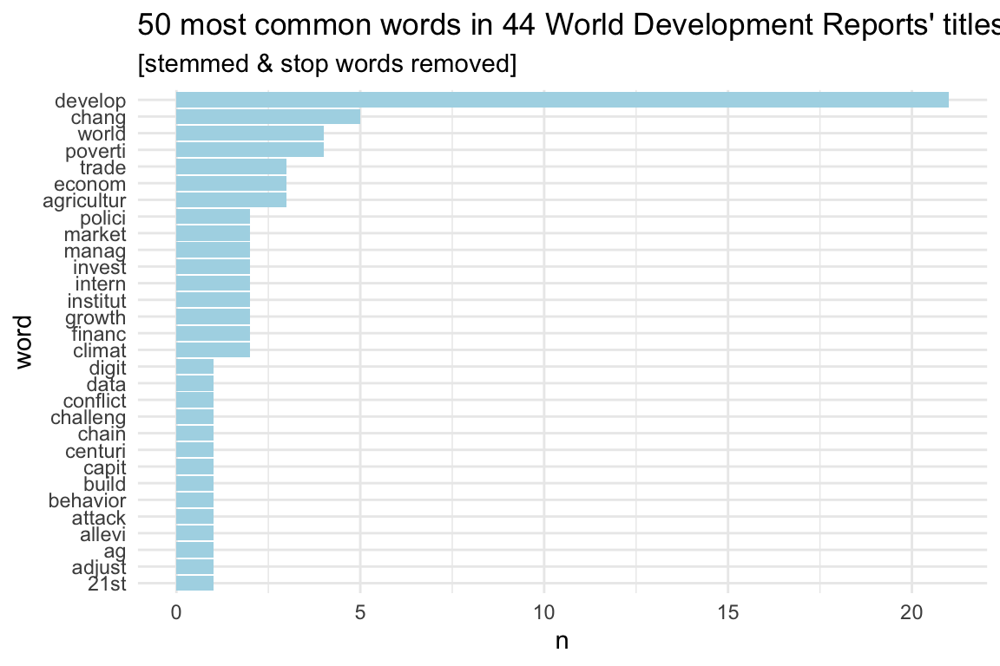
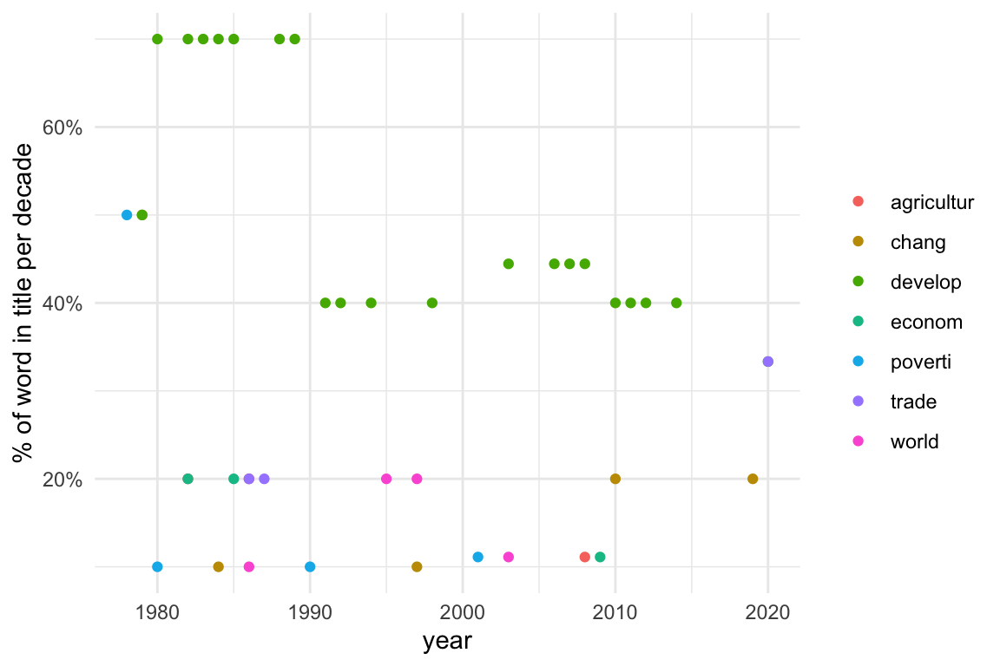
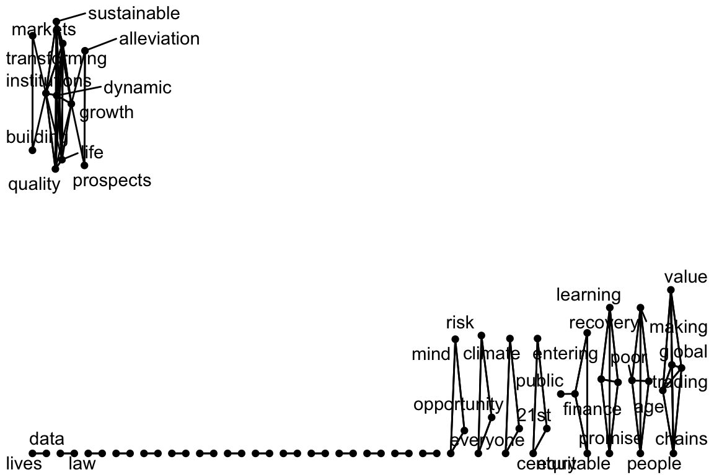
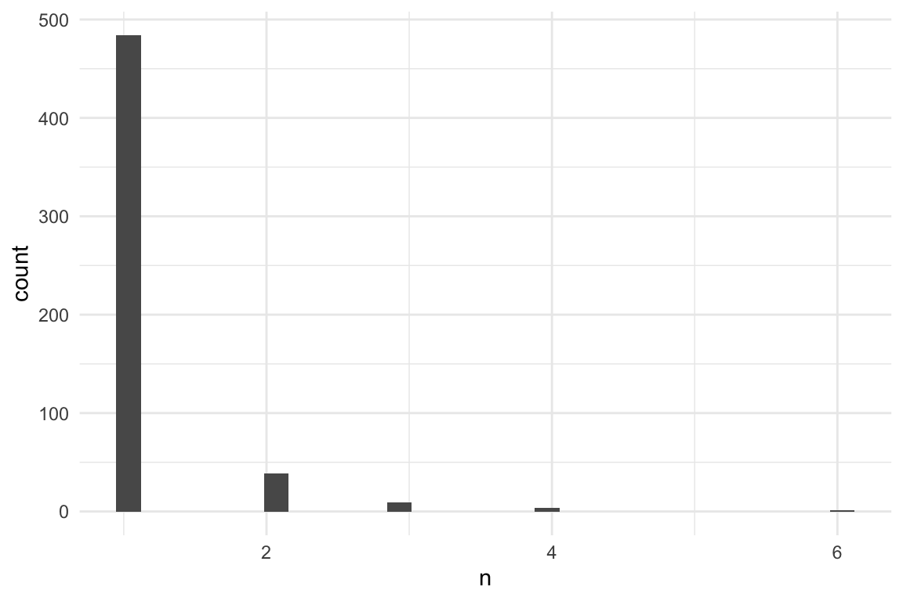
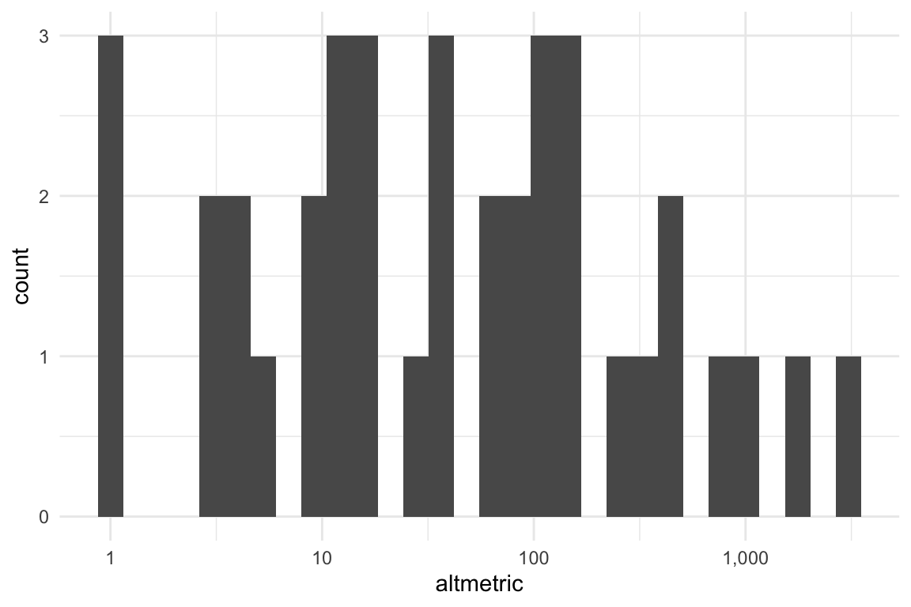
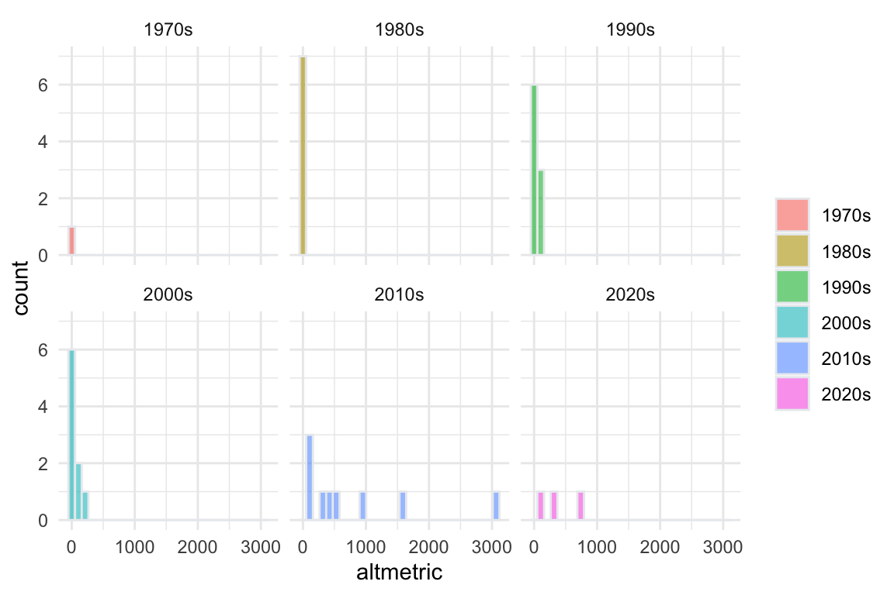
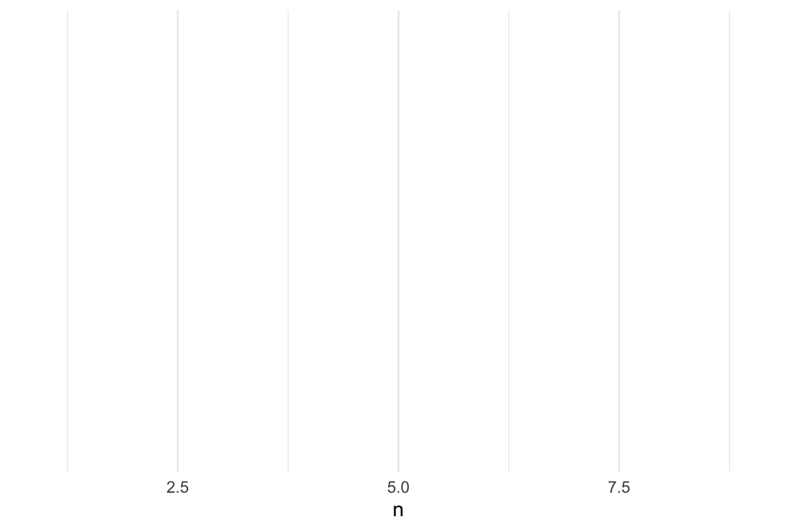
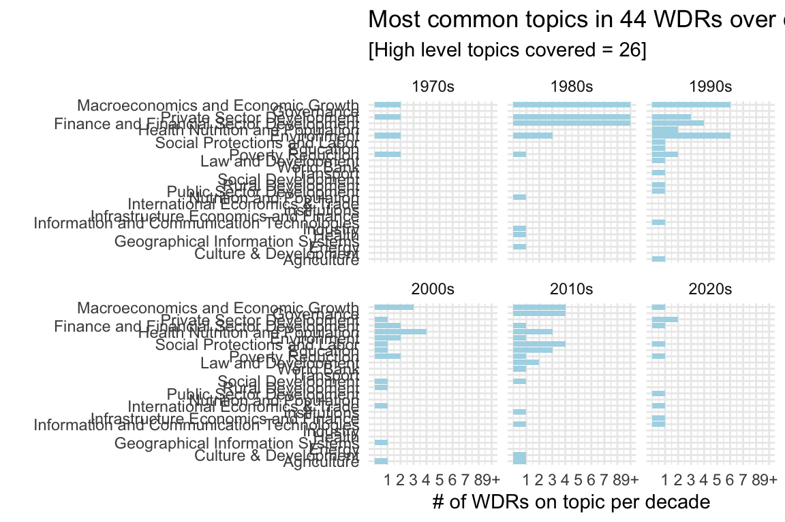
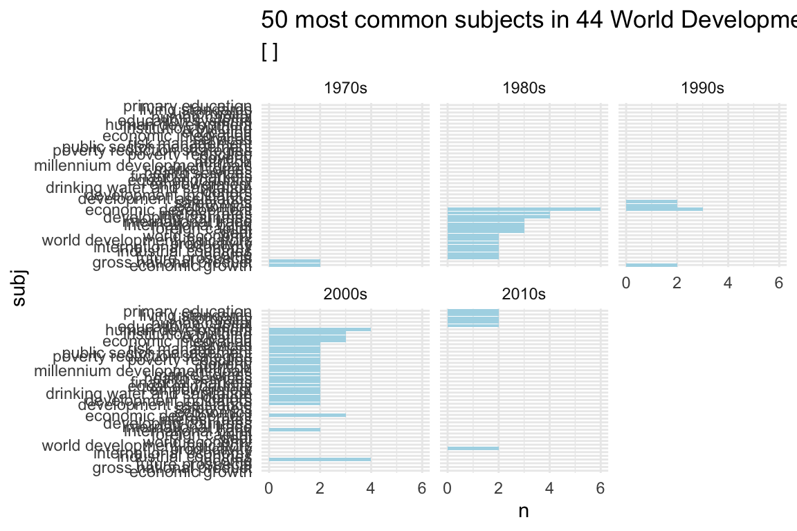

Process and merge data - WDR subjects
Luisa M. Mimmi
Last run: 2022-09-14
Work in progress
# Pckgs -------------------------------------
if (!require ("pacman")) (install.packages("pacman"))## Loading required package: pacman#p_install_gh("luisDVA/annotater")
#p_install_gh("HumanitiesDataAnalysis/hathidy")
# devtools::install_github("HumanitiesDataAnalysis/HumanitiesDataAnalysis")
pacman::p_load(here,
tidyverse, magrittr,
skimr,
scales, colorspace,
httr,
citr,
paint,
DT, # an R interface to the JavaScript library DataTables
knitr,
kableExtra,
splitstackshape, #Stack and Reshape Datasets After Splitting Concatenated Values
tm, # Text Mining Package
tidytext, # Text Mining using 'dplyr', 'ggplot2', and Other Tidy Tools
quanteda,
widyr, # pairwise ????
ggraph,
igraph,
sjmisc, # Data and Variable Transformation Functions
ggraph, # An Implementation of Grammar of Graphics for Graphs and Networks
widyr, # Widen, Process, then Re-Tidy Data
SnowballC, # Snowball Stemmers Based on the C 'libstemmer' UTF-8 Library
HumanitiesDataAnalysis, # Data and Code for Teaching Humanities Data Analysis
sentencepiece, # Text Tokenization using Byte Pair Encoding and Unigram Modelling
sysfonts
)
# Plot Theme(s) -------------------------------------
#source(here("R", "ggplot_themes.R"))
ggplot2::theme_set(theme_minimal())
# color paletts -----
mycolors_gradient <- c("#ccf6fa", "#80e8f3", "#33d9eb", "#00d0e6", "#0092a1")
mycolors_contrast <- c("#E7B800", "#a19100", "#0084e6","#005ca1", "#e60066" )
# Function(s) -------------------------------------
# Data -------------------------------------
# Tables [AH knit setup when using kbl() ]------------------------------------
knit_print.data.frame <- function(x, ...) {
res <- paste(c('', '', kable_styling(kable(x, booktabs = TRUE))), collapse = '\n')
asis_output(res)
}
registerS3method("knit_print", "data.frame", knit_print.data.frame)
registerS3method("knit_print", "grouped_df", knit_print.data.frame)World Development Reports (WRDs)
- DATA https://datacatalog.worldbank.org/search/dataset/0037800
- INSTRUCTIONS https://documents.worldbank.org/en/publication/documents-reports/api
- Following: (Kaye 2019; Robinson 2017; Robinson and Silge 2022)
I) Pre-processing
I.ii) – Set stopwords [more…]
# --- alt stop words
# mystopwords <- tibble(word = c("eq", "co", "rc", "ac", "ak", "bn",
# "fig", "file", "cg", "cb", "cm",
# "ab", "_k", "_k_", "_x"))
# --- set up stop words
stop_words <- as_tibble(stop_words) %>% # in the tidytext dataset
add_row(word = "WDR", lexicon = NA_character_) %>%
# add_row(word = "world", lexicon = NA_character_) %>%
add_row(word = "report", lexicon = NA_character_) %>%
# add_row(word = "development", lexicon = NA_character_) %>%
add_row(word = "1978", lexicon = NA_character_) %>%
add_row(word = "1979", lexicon = NA_character_) %>%
add_row(word = "1980", lexicon = NA_character_) %>%
add_row(word = "1981", lexicon = NA_character_) %>%
add_row(word = "1982", lexicon = NA_character_) %>%
add_row(word = "1983", lexicon = NA_character_) %>%
add_row(word = "1984", lexicon = NA_character_) %>%
add_row(word = "1985", lexicon = NA_character_) %>%
add_row(word = "1986", lexicon = NA_character_) %>%
add_row(word = "1987", lexicon = NA_character_) %>%
add_row(word = "1988", lexicon = NA_character_) %>%
add_row(word = "1989", lexicon = NA_character_) %>%
add_row(word = "1990", lexicon = NA_character_) %>%
add_row(word = "1991", lexicon = NA_character_) %>%
add_row(word = "1992", lexicon = NA_character_) %>%
add_row(word = "1993", lexicon = NA_character_) %>%
add_row(word = "1994", lexicon = NA_character_) %>%
add_row(word = "1995", lexicon = NA_character_) %>%
add_row(word = "1996", lexicon = NA_character_) %>%
add_row(word = "1997", lexicon = NA_character_) %>%
add_row(word = "1998", lexicon = NA_character_) %>%
add_row(word = "1999", lexicon = NA_character_) %>%
add_row(word = "2000", lexicon = NA_character_) %>%
add_row(word = "2001", lexicon = NA_character_) %>%
add_row(word = "2002", lexicon = NA_character_) %>%
add_row(word = "2003", lexicon = NA_character_) %>%
add_row(word = "2004", lexicon = NA_character_) %>%
add_row(word = "2005", lexicon = NA_character_) %>%
add_row(word = "2006", lexicon = NA_character_) %>%
add_row(word = "2007", lexicon = NA_character_) %>%
add_row(word = "2008", lexicon = NA_character_) %>%
add_row(word = "2009", lexicon = NA_character_) %>%
add_row(word = "2010", lexicon = NA_character_) %>%
add_row(word = "2011", lexicon = NA_character_) %>%
add_row(word = "2012", lexicon = NA_character_) %>%
add_row(word = "2013", lexicon = NA_character_) %>%
add_row(word = "2014", lexicon = NA_character_) %>%
add_row(word = "2015", lexicon = NA_character_) %>%
add_row(word = "2016", lexicon = NA_character_) %>%
add_row(word = "2017", lexicon = NA_character_) %>%
add_row(word = "2018", lexicon = NA_character_) %>%
add_row(word = "2019", lexicon = NA_character_) %>%
add_row(word = "2020", lexicon = NA_character_) %>%
add_row(word = "2021", lexicon = NA_character_) %>%
add_row(word = "2022", lexicon = NA_character_) %>%
filter (word != "changes") %>%
filter (word != "value") %>%
filter (word != "member") %>%
filter (word != "part") %>%
filter (word != "possible") %>%
filter (word != "point") %>%
filter (word != "present") %>%
filter (word != "zero") %>%
filter (word != "young") %>%
filter (word != "old") %>%
filter (word != "trying")
# --- set up stop words stemmed
stop_words_stem <- stop_words %>%
mutate (word = SnowballC::wordStem(word ))II) Data (ingestion), loading & cleaning
Ingestion of WDR basic metadata was done in
./_my_stuff/WDR-data-ingestion.Rmd and the result saved as
WDR.rds <– (Being somewhat computational intensive, I
only did it once.)
- WDR = tibble [45, 8]
- doc_mt_identifier_1 chr oai:openknowledge.worldbank.org:109~
- doc_mt_identifier_2 chr http://www-wds.worldbank.org/extern~
- doc_mt_title chr Development Economics through the ~
- doc_mt_date chr 2012-03-19T10:02:25Z 2012-03-19T19:~
- doc_mt_creator chr Yusuf, Shahid World Bank World Bank~
- doc_mt_subject chr ABSOLUTE POVERTY AGGLOMERATION BENE~
- doc_mt_description chr The World Development Report (WDR) ~
- doc_mt_set_spec chr oai:openknowledge.worldbank.org:109~
Ingestion of WDR lists of subjects was available
among metadata but presented issues (difficulty to extract, many records
with repetition,apparently wrong) so I reconstructed them manually in
data/raw_data/WDR_subjects_corrected2010_2011.xlsx taking
them from site https://elibrary.worldbank.org/ which lists
keywords correctly Es
2022 WDR
# WRD metadata taken with API get (issues)
WDR <- readr::read_rds(here::here("data", "raw_data", "WDR.rds" )) %>%
# Extract only the portion of string AFTER the backslash {/}
mutate(id = as.numeric(stringr::str_extract(doc_mt_identifier_1, "[^/]+$"))) %>%
dplyr::relocate(id, .before = doc_mt_identifier_1) %>%
mutate(url_keys = paste0("https://openknowledge.worldbank.org/handle/10986/", id , "?show=full")) %>%
# eliminate NON WDR book
dplyr::filter(id != "2586")
# WRD subject/date_issued taken by manual review
WDR_subjects <- readxl::read_excel(here::here("data", "raw_data",
"WDR_subjects_corrected2010_2011.xlsx")) %>%
drop_na(id) %>%
# eliminate NON WDR book
dplyr::filter(id != "2586") ## New names:
## • `` -> `...6`
## • `` -> `...7`
## • `` -> `...8`# delete empty cols
ColNums_NotAllMissing <- function(df){ # helper function
as.vector(which(colSums(is.na(df)) != nrow(df)))
}
WDR_subjects <- WDR_subjects %>%
select(ColNums_NotAllMissing(.))
# # convert all columns that start with "subj_" to lowercase
# WDR_subjects[3:218] <- sapply(WDR_subjects[3:218], function(x) tolower(x))
# join
WDR_com <- left_join(WDR, WDR_subjects, by = "id") %>%
dplyr::relocate(date_issued, .before = id ) %>%
# drop useles clmns
dplyr::select(#-doc_mt_identifier_1,
-doc_mt_identifier_2, -doc_mt_date,
-doc_mt_subject, -doc_mt_creator, -doc_mt_set_spec) %>%
# dplyr::relocate(url_keys, .after = subj_216 ) %>%
dplyr::rename(abstract = doc_mt_description) %>%
# correct titles -> portion after {:}
dplyr::mutate(., title = str_extract(doc_mt_title,"[^:]+$")) %>%
dplyr::relocate(title, .after = id) %>%
dplyr::rename(title_miss = doc_mt_title) %>%
dplyr::mutate(title_miss = case_when(
str_starts(title, "World Development Report") ~ "Y",
TRUE ~ NA_character_)
) %>%
dplyr::mutate(subject_miss = if_else(is.na(subj_1),
"Y",
NA_character_)) %>%
dplyr::relocate(subject_miss, .after = title_miss) %>%
dplyr::relocate(ISBN, .after = id)
#paint(WDR_com)
# convert all columns that start with "subj_" to lowercase (maybe redundant)
WDR_com[, grep("^subj_", names(WDR_com))] <- sapply(WDR_com[, grep("^subj_", names(WDR_com))], function(x) tolower(x))
# combine all `subj_...` vars into a vector separated by comma
col_subj <- names(WDR_com[, grep("^subj_", names(WDR_com))] )
WDR_com <- WDR_com %>% tidyr::unite(
col = "all_subj",
subj_1:subj_46,
sep = ",",
remove = FALSE,
na.rm = TRUE) %>%
arrange(date_issued)
#paint(WDR_com)– Some manual correction of wrong metadata
# adding actual titles
#WDR_com[WDR_com$date_issued == "1978", c("date_issued", "id", "title")]
WDR_com$title[WDR_com$id == "5961"] <- "Prospects for Growth and Alleviation of Poverty"
#WDR_com[WDR_com$date_issued == "1979", c("date_issued", "id", "title")]
WDR_com$title[WDR_com$id == "5962"] <- "Structural Change and Development Policy"
#WDR_com[WDR_com$date_issued == "1980", c("date_issued", "id", "title")]
WDR_com$title[WDR_com$id == "5963"] <- "Poverty and Human Development"
#WDR_com[WDR_com$date_issued == "1981", c("date_issued", "id", "title")]
WDR_com$title[WDR_com$id == "5964"] <- "National and International Adjustment"
#WDR_com[WDR_com$date_issued == "1982", c("date_issued", "id", "title")]
WDR_com$title[WDR_com$id == "5965"] <- "Agriculture and Economic Development"
#WDR_com[WDR_com$date_issued == "1983", c("date_issued", "id", "title")]
WDR_com$title[WDR_com$id == "5966"] <- "Management in Development"
#WDR_com[WDR_com$date_issued == "1984", c("date_issued", "id", "title")]
WDR_com$title[WDR_com$id == "5967"] <- "Population Change and Development"
#WDR_com[WDR_com$date_issued == "1985", c("date_issued", "id", "title")]
WDR_com$title[WDR_com$id == "5968"] <- "International Capital and Economic Development"
#WDR_com[WDR_com$date_issued == "1986", c("date_issued", "id", "title")]
WDR_com$title[WDR_com$id == "5969"] <- "Trade and Pricing Policies in World Agriculture"
#WDR_com[WDR_com$date_issued == "1987", c("date_issued", "id", "title")]
WDR_com$title[WDR_com$id == "5970"] <- "Industrialization and Foreign Trade"
#WDR_com[WDR_com$date_issued == "1988", c("date_issued", "id", "title")]
WDR_com$title[WDR_com$id == "5971"] <- "Public Finance in Development"
# wrong year
#WDR_com[WDR_com$date_issued %in% c( "2011","2012","2013", "2014", "2015"), c("date_issued", "id", "title")]
WDR_com$date_issued[WDR_com$id == "11843"] <- "2013"
WDR_com$date_issued[WDR_com$id == "16092"] <- "2014"II.i) Troubleshooting some obs
PROBLEM: some of the subjects collections are evidently wrong (either they are the same of another WDR or the list is impossibly long)
MY SOLUTION #1: I took them manually from the website “elibrary” https://elibrary.worldbank.org/action/showPublications?SeriesKey=b02
But, there still is WDR 2011 (“Conflict, Security, and Development”) which misses keywords
MY SOLUTION #2: I take the abstract and I create my own “plausible list” of subjects
— Extrapolate subjects from abstracts - for record with missing subjects/keywords
(*) There will remain a problem: this corrected records have tokens and not bi|n-grams (which make more sense)!
# --- identify wrong subject obs
WDR_wr <- WDR_com %>%
filter( subject_miss == "Y")
# names(WDR_com)– WDR caseid = 4389
# --- tokenize abstract
WDR_4389 <- WDR_wr %>%
filter(id =="4389") %>%
select (abstract) %>% as_tibble() %>%
tidytext::unnest_tokens(word, abstract) # -> 251 words
# --- remove stop words
# --- isolate meaningful tokens
WDR_4389 <- WDR_4389 %>%
anti_join( stop_words , by = "word") %>% # -> 131 words
# Count observations by group
count(word, sort = T) # -> 101 words
# rename column in result corrected
WDR_4389_w <- t(WDR_4389) %>% as_tibble() ## Warning: The `x` argument of `as_tibble.matrix()` must have unique column names if `.name_repair` is omitted as of tibble 2.0.0.
## Using compatibility `.name_repair`.
## This warning is displayed once every 8 hours.
## Call `lifecycle::last_lifecycle_warnings()` to see where this warning was generated.names(WDR_4389_w) <- gsub(x = names(WDR_4389_w), pattern = "\\V", replacement = "subj_")
# --- graph words
# p <- WDR_4389 %>% count(word, sort = TRUE) %>%
# filter(n > 600) %>%
# mutate(word = reorder(word, n)) %>%
# ggplot(aes(n, word)) +
# geom_col() +
# labs(y = NULL)
# p
#
# --- replace as subjects
WDR_4389_w <- WDR_4389_w %>%
filter(row_number() == 1 ) %>%
mutate(id = 4389) %>%
relocate(id, .before = subj_1)
# names(WDR_4389_w)
WDR_4389_w <- WDR_4389_w %>%
tidyr::unite(
col = "all_subj",
subj_1:subj_100,
sep = ",",
remove = FALSE)
#names(WDR_com)
WDR_com_2 <- WDR_com %>%
relocate(subj_1 ,.after = all_subj)
# # create a vector of column names to add to reach the n length(WDR_com)
# col_names <- as.vector(paste0('subj_', length(WDR_4389_w):105))
#
# # make a df with those cols and 1 row made of Nas values
# to_add <- bind_rows(setNames(rep("", length(col_names)), col_names))[NA_character_, ]
#
# # --- pad until subj_216 with nas.........
# WDR_4389_w_pad <- bind_cols(WDR_4389_w, to_add)
#### -- NOW: replace corrected single WDR case into master df
# # initial check ---
# WDR_com$subj_1[WDR_com$id == 4389]
# WDR_com$subj_3[WDR_com$id == 4389]
# #---
#id <- 4389
col_subj_names <- names(WDR_4389_w)[-(1)] # without "id" "all_subj"
# pick the id
i <- 4389
# # --- function --- NO JOY!
# for (j in 1:length(col_subj_names)) {
# col <- col_subj_names[j]
# # print(col) # nolint
# WDR_com %>%
# dplyr::filter (id == i) %>%
# dplyr::mutate (., col = WDR_4389_w_pad$col)
# WDR_com_2 <- WDR_com
# }
# ---------# Solution from SO guy
# r is vectorized so
WDR_com_2[WDR_com_2$id %in% WDR_4389_w$id, 9:55] <- WDR_4389_w[, 2:48] * I cut some …so this record WDR_4389 will be incomplete
II.ii) – SAVE wdr and cleanenv
wdr <- WDR_com_2 %>%
select(-title_miss) %>%
mutate(decade = case_when(
str_detect (string = date_issued, pattern = "^197") ~ "1970s",
str_detect (string = date_issued, pattern = "^198") ~ "1980s",
str_detect (string = date_issued, pattern = "^199") ~ "1990s",
str_detect (string = date_issued, pattern = "^200") ~ "2000s",
str_detect (string = date_issued, pattern = "^201") ~ "2010s",
str_detect (string = date_issued, pattern = "^202") ~ "2020s"
)) %>%
relocate(decade, .after = date_issued) %>%
# correct some datatype
mutate_at(vars(date_issued, altmetric), as.numeric) ## Warning in mask$eval_all_mutate(quo): NAs introduced by coerciondataDir <- fs::path_abs(here::here("data","derived_data"))
fileName <- "/wdr.rds"
Dir_File <- paste0(dataDir, fileName)
write_rds(x = wdr, file = Dir_File)
# # ls objects
# list_old_WDR <- ls(# pattern = "^WDR",
# all.names = TRUE)
# list_old_WDR
# rm(list = setdiff(list_old_WDR, c("stop_words", "stop_words_stem")))wdr <- readr::read_rds(here::here("data", "derived_data", "wdr.rds" ))I.iii) > > Part of Speech Tagging
Tagging segments of speech for part-of-speech (nouns, verbs, adjectives, etc.) or entity recognition (person, place, company, etc.) https://m-clark.github.io/text-analysis-with-R/part-of-speech-tagging.html
– tagging with cleanNLP
AH: https://datavizs22.classes.andrewheiss.com/example/13-example/#sentiment-analysis
Here’s the general process for tagging (or “annotating”) text with the cleanNLP package:
- Make a dataset where one column is the id (line number, chapter number, book+chapter, etc.), and another column is the text itself.
- Initialize the NLP tagger. You can use any of these:
cnlp_init_udpipe(): Use an R-only tagger that should work without installing anything extra (a little slower than the others, but requires no extra steps!)cnlp_init_spacy(): Use spaCy (if you’ve installed it on your computer with Python)cnlp_init_corenlp(): Use Stanford’s NLP library (if you’ve installed it on your computer with Java)
- Feed the data frame from step 1 into the cnlp_annotate() function and wait.
- Save the tagged data on your computer so you don’t have to re-tag it every time.
————– [TITLES ?] ——————
IV.i) Tokenization
Following: http://varianceexplained.org/r/hn-trends/
# unnest titles
title_words <- wdr %>% # 44 obs X 5 var
mutate (year = date_issued) %>%
# isolate necessary
dplyr::select(id, year, decade, title, altmetric ) %>% # isolate titles
arrange(desc(year)) %>%
# (redundant) Select only unique/distinct rows from a data frame
# dplyr::distinct(title, .keep_all = TRUE) %>%
# ----- tidytext’s unnest_tokens function = {turn titles in individual words}
unnest_tokens(output = word,
input = title,
drop = FALSE, # Whether original input column should get dropped
to_lower = T, # (implicit) otherwise cannot match the stop_words
strip_punc = TRUE) %>% # 196 obs
# ---- token processing
# [Optional] stems words
mutate(word = SnowballC::wordStem(word)) %>% # **
# [Optional] sometimes needed to graph
mutate(title = factor(title, ordered = TRUE)) %>%
mutate(year = factor(year, ordered = TRUE)) %>% # 196 obs X 5 var
# creates a data frame with one row per word per post!!!
# Select only unique/distinct rows from a data frame (if not unique keep first) | keep all vars
distinct(id, word, .keep_all = TRUE) %>% # (redundant, no repetition of words in title)
# delete stop words (also previously stemmed)
anti_join(stop_words_stem, by = "word") %>% # ** # 101 obs | 95 if stemmed
filter(str_detect(word, "[^\\d]")) %>%
# calculate totals by word across all titles (eg agricultur = in 3 WDR)
group_by(word) %>%
mutate(word_total = n()) %>%
ungroup() — Plot/save most common words in ALL 44 TITLES
# this is the same as title_words$word_total, but just the totals NO REPETITION
word_counts <- title_words %>%
# Count observations by group(ed words)
count(word, sort = TRUE)
# plot
p_most_common_word_in_title <- word_counts %>%
head(30) %>%
# filter ( n >1) %>%
mutate(word = reorder(word, n)) %>%
ggplot(aes(word, n)) +
# geom_col() uses stat_identity(): it leaves the data as is.
geom_col(fill = "lightblue") +
scale_y_continuous(labels = comma_format()) +
coord_flip() +
labs(title = "50 most common words in 44 World Development Reports' titles",
subtitle = "[stemmed & stop words removed]" #, y = "# of uses"
)
p_most_common_word_in_title %T>%
print() %T>%
ggsave(., filename = here("analysis", "output", "figures", "most_common_word_in_title.pdf"),
#width = 4, height = 2.25, units = "in",
device = cairo_pdf) %>%
ggsave(., filename = here("analysis", "output", "figures", "most_common_word_in_title.png"),
#width = 4, height = 2.25, units = "in",
type = "cairo", dpi = 300) ## Saving 6 x 4 in image
## Saving 6 x 4 in image
What are specific words that get a high altmetric ? https://youtu.be/C69QyycHsgE
alt_title_words <- title_words %>%
# Count observations by group(ed words)
add_count(word ) %>%
group_by(word) %>%
summarise(median_alt = median (altmetric),
# compresses the scale and you go up by smaller increments
geometric_mean_alt = exp(mean(log(altmetric + 1))) -1,
occurrences = n()) %>%
arrange(desc(median_alt))
alt_title_words| word | median_alt | geometric_mean_alt | occurrences |
|---|---|---|---|
| digit | 3066.0 | 3066.000000 | 1 |
| dividend | 3066.0 | 3066.000000 | 1 |
| education’ | 1577.0 | 1577.000000 | 1 |
| learn | 1577.0 | 1577.000000 | 1 |
| promis | 1577.0 | 1577.000000 | 1 |
| realiz | 1577.0 | 1577.000000 | 1 |
| behavior | 989.0 | 989.000000 | 1 |
| mind | 989.0 | 989.000000 | 1 |
| societi | 989.0 | 989.000000 | 1 |
| ag | 792.0 | 792.000000 | 1 |
| chain | 792.0 | 792.000000 | 1 |
| global | 792.0 | 792.000000 | 1 |
| valu | 792.0 | 792.000000 | 1 |
| equal | 502.0 | 502.000000 | 1 |
| gender | 502.0 | 502.000000 | 1 |
| govern | 444.0 | 444.000000 | 1 |
| law | 444.0 | 444.000000 | 1 |
| data | 350.0 | 350.000000 | 1 |
| live | 350.0 | 350.000000 | 1 |
| opportun | 271.0 | 271.000000 | 1 |
| risk | 271.0 | 271.000000 | 1 |
| geographi | 167.0 | 167.000000 | 1 |
| reshap | 167.0 | 167.000000 | 1 |
| health | 156.0 | 156.000000 | 1 |
| equit | 154.0 | 154.000000 | 1 |
| recoveri | 154.0 | 154.000000 | 1 |
| manag | 137.0 | 31.984845 | 2 |
| peopl | 103.0 | 103.000000 | 1 |
| poor | 103.0 | 103.000000 | 1 |
| servic | 103.0 | 103.000000 | 1 |
| natur | 95.0 | 95.000000 | 1 |
| invest | 82.0 | 36.589892 | 2 |
| financ | 77.5 | 16.606817 | 2 |
| job | 75.0 | 75.000000 | 1 |
| climat | 39.0 | 24.278449 | 2 |
| infrastructur | 38.0 | 38.000000 | 1 |
| popul | 35.0 | 35.000000 | 1 |
| build | 25.0 | 25.000000 | 1 |
| market | 21.5 | 21.226111 | 2 |
| knowledg | 18.0 | 18.000000 | 1 |
| plan | 18.0 | 18.000000 | 1 |
| institut | 15.5 | 12.490738 | 2 |
| attack | 15.0 | 15.000000 | 1 |
| poverti | 13.0 | 20.138961 | 4 |
| equiti | 12.0 | 12.000000 | 1 |
| 21st | 11.0 | 11.000000 | 1 |
| centuri | 11.0 | 11.000000 | 1 |
| enter | 11.0 | 11.000000 | 1 |
| human | 11.0 | 11.000000 | 1 |
| allevi | 9.0 | 9.000000 | 1 |
| prospect | 9.0 | 9.000000 | 1 |
| growth | 7.5 | 7.366600 | 2 |
| dynam | 6.0 | 6.000000 | 1 |
| life | 6.0 | 6.000000 | 1 |
| qualiti | 6.0 | 6.000000 | 1 |
| sustain | 6.0 | 6.000000 | 1 |
| transform | 6.0 | 6.000000 | 1 |
| world | 5.0 | 7.336558 | 4 |
| agricultur | 4.0 | 12.526696 | 3 |
| price | 4.0 | 4.000000 | 1 |
| trade | 4.0 | 18.941496 | 3 |
| challeng | 3.0 | 3.000000 | 1 |
| foreign | 1.0 | 1.000000 | 1 |
| industri | 1.0 | 1.000000 | 1 |
| integr | 1.0 | 1.000000 | 1 |
| public | 1.0 | 1.000000 | 1 |
| worker | 1.0 | 1.000000 | 1 |
| adjust | NA | NA | 1 |
| capit | NA | NA | 1 |
| chang | NA | NA | 5 |
| conflict | NA | NA | 1 |
| develop | NA | NA | 21 |
| econom | NA | NA | 3 |
| environ | NA | NA | 1 |
| financi | NA | NA | 1 |
| intern | NA | NA | 2 |
| nation | NA | NA | 1 |
| polici | NA | NA | 2 |
| secur | NA | NA | 1 |
| structur | NA | NA | 1 |
| system | NA | NA | 1 |
— Plot/save most common words in ALL 44 TITLES - over time
What words and topics have become more frequent, or less frequent, over time? These could give us a sense of the changing focus in dev econ, and let us predict what topics will continue to grow in relevance.
To achieve this, we’ll first count the occurrences of words in titles by decades
wdr_decade <- wdr %>%
mutate (year = date_issued) %>%
# isolate necessary
dplyr::select(id, year, decade, title ) %>%
arrange(desc(year))
# 1) obtain "decade_total"
title_per_decade <- wdr_decade %>%
group_by(decade) %>%
summarize(decade_total = n()) %>%
ungroup()
# 2) obtain count "n" <-- (group BY word*decade)
word_decade_counts <- title_words %>%
# filter(word_total >= 1000) %>%
count(word, decade) %>%
complete(word, decade, fill = list(n = 0)) %>%
# join with 1)
inner_join(title_per_decade, by = "decade") %>%
mutate(percent = n / decade_total) %>%
# weird step to re-attach year
inner_join(title_words, by = c("word", "decade")) %>%
select (-id, -title, word, word_total, decade, n, decade_total, percent, year) %>%
mutate (year = as.character(year)) %>%
mutate (year = as.numeric(year))
paint(word_decade_counts)## tibble [126, 8]
## word chr 21st adjust ag agricultur agricultur agric~
## decade chr 1990s 1980s 2020s 1980s 1980s 2000s
## n int 1 1 1 2 2 1
## decade_total int 10 10 3 10 10 9
## percent dbl 0.1 0.1 0.333333 0.2 0.2 0.111111
## year dbl 1999 1981 2020 1986 1982 2008
## altmetric dbl 11 NA 792 4 4 98
## word_total int 1 1 1 3 3 3————– {START: troppo difficile} ——————
# library(broom)
#
# mod <- ~ glm(cbind(n, decade_total - n) ~ decade, ., family = "binomial")
#
# slopes <- word_decade_counts %>%
# nest(-word) %>%
# mutate(model = map(data, mod)) %>%
# unnest(map(model, tidy)) %>%
# filter(term == "year") %>%
# arrange(desc(estimate))
#
# slopestibble [100, 7] word chr 21st adjust ag agricultur agricultur agric~ word_total int 1 1 1 3 3 3 = [how many times word appear in titles ] decade chr 1990s 1980s 2020s 1980s 1980s 2000s n int 1 1 1 2 2 1 = [how many times word appear in titles ] decade_total int 10 10 3 10 10 9 = [how many doc per decade ] percent dbl 0.1 0.1 0.333333 0.2 0.2 0.111111 = [% of doc per decade mentioning the word] year dbl 1999 1981 2020 1986 1982 2008
simple lineover time
word_decade_counts %>%
filter(word_total > 2) %>%
ggplot(aes(year, percent, color = word)) +
geom_point() +
scale_y_continuous(labels = percent_format()) +
labs(x = "Hour of day (EST)",
y = "% of tweets",
color = "")
#### ————– {END: troppo difficile} ——————IV.ii) > > Word and document frequency: TF-IDF
IV.iii) Relationships b/w words: Word clusters
I want to consider clusters, but I don’t want to guess them I want to draw them from the data
# hereI want to unstemm the title words
# unnest titles
title_words2 <- wdr %>% # 44 obs X 5 var
mutate (year = date_issued) %>%
# isolate necessary
dplyr::select(id, year, decade, title, altmetric ) %>% # isolate titles
arrange(desc(year)) %>%
# (redundant) Select only unique/distinct rows from a data frame
# dplyr::distinct(title, .keep_all = TRUE) %>%
# ----- tidytext’s unnest_tokens function = {turn titles in individual words}
unnest_tokens(output = word,
input = title,
drop = FALSE, # Whether original input column should get dropped
to_lower = T, # (implicit) otherwise cannot match the stop_words
strip_punc = TRUE) %>% # 196 obs
# ---- token processing
# [Optional] stems words
# mutate(word = SnowballC::wordStem(word)) %>% # **
# [Optional] sometimes needed to graph
mutate(title = factor(title, ordered = TRUE)) %>%
mutate(year = factor(year, ordered = TRUE)) %>% # 196 obs X 5 var
# creates a data frame with one row per word per post!!!
# Select only unique/distinct rows from a data frame (if not unique keep first) | keep all vars
distinct(id, word, .keep_all = TRUE) %>% # (redundant, no repetition of words in title)
# delete stop words (also previously stemmed)
anti_join(stop_words_stem, by = "word") %>% # ** # 101 obs | 95 if stemmed
filter(str_detect(word, "[^\\d]")) %>%
# calculate totals by word across all titles (eg agricultur = in 3 WDR)
group_by(word) %>%
mutate(word_total = n()) %>%
ungroup()
# I will also make the alt alt_title_words2
alt_title_words2 <- title_words2 %>%
# Count observations by group(ed words)
add_count(word ) %>%
group_by(word) %>%
summarise(median_alt = median (altmetric),
# compresses the scale and you go up by smaller increments
geometric_mean_alt = exp(mean(log(altmetric + 1))) -1,
occurrences = n()) %>%
arrange(desc(median_alt))corr GRAPHS
# get pairwise correlation with {widyr}
top_corr <- title_words2 %>%
select (id, word) %>%
widyr::pairwise_cor(word, id, sort = TRUE) %>%
head(150)
#str(top_corr)
set.seed(2022)
# graph them
top_corr %>%
graph_from_data_frame() %>%
ggraph() +
geom_edge_link() +
geom_node_point() +
geom_node_text(aes(label = name), repel = TRUE) + theme_void()## Using `stress` as default layout## Warning: ggrepel: 34 unlabeled data points (too many overlaps). Consider
## increasing max.overlaps
Now I want to add some metrics to the graph, so I take
alt_title_words which had some calculated things in it
vertices <- alt_title_words2 %>%
# filter words that have correlation
filter(word %in% top_corr$item1 |
word %in% top_corr$item2)
set.seed(2022)
# graph them
# here I add what clusters get more altmetric than others
top_corr %>%
graph_from_data_frame(vertices = vertices) %>% # df !
ggraph() +
geom_edge_link() +
geom_node_point(aes(size = occurrences,
color = geometric_mean_alt)) + # aes !
geom_node_text(aes(label = name), repel = TRUE) +
scale_color_gradient2(low = "blue",
high = "red",
midpoint = 1000) +
theme_void() +
labs(title = "what's hot in WDR titles?",
subtitle = "Color shows the geom mean of altmetric score on WDR titles containing this word",
size = "# of occurrences",
color = "Altmetric (mean)") ## Using `stress` as default layout## Warning: ggrepel: 38 unlabeled data points (too many overlaps). Consider
## increasing max.overlaps
Predicting altmetric based on title + topic
# some reshaping
title_word_matrix <- title_words2 %>%
distinct(id, word, altmetric) %>%
# turn into a sparse matrix
cast_sparse(id, word)
dim(title_word_matrix)## [1] 44 90# ... IV.iv) > > Relationships b/w words: n-grams and correlations Word clusters
IV.v) > > Topic modeling
————– [SUBJECTS & TOPICS !!!] ——————
must spread all_subj so that I have colum = “agric” row equal 0,1 thenn
#noquote(names(wdr))
wdr_subj <- wdr %>%
# delete subj_
select (date_issued, decade, title, abstract,
altmetric, all_topic, all_subj)
# rownames_to_column(wdr_subj, 'all_subj') %>%
# separate_rows(col) %>%
# filter(col !="") %>%
# count( all_subj, col) %>%
# spread(col, n, fill = 0) %>%
# ungroup() %>%
# select(-all_subj)
# # base
# x <- strsplit(as.character(wdr_subj$all_subj), ",\\s?") # split the strings
# lvl <- unique(unlist(x)) # get unique elements
# x <- lapply(x, factor, levels = lvl) # convert to factor
# subj_df <- as_tibble(t(sapply(x, table)) ) # count elements and transpose
# # data.table
# library(data.table)
# wdr_subj2 <- setDT(wdr_subj)[, tstrsplit(all_subj, ", |,")]
# dcast(melt(wdr_subj2, measure = names(wdr_subj2)), rowid(variable) ~ value, length)
library(splitstackshape)
wdr_subj2 <- splitstackshape::cSplit_e(wdr_subj, "all_subj", ",", mode = "binary", type = "character", fill = 0)
wdr_subj3 <- splitstackshape::cSplit_e(wdr_subj, "all_topic", ",", mode = "binary", type = "character", fill = 0)— which SUBJ are the most common?
wdr_subj2 %>%
# summarise whole bunch of columns with sum
summarise_at(vars(starts_with("all_subj_")), sum)| all_subj_access to finance | all_subj_access to knowledge | all_subj_accountability | all_subj_accounting | all_subj_acute respiratory infection | all_subj_adolescents | all_subj_adult roles | all_subj_adulthood | all_subj_agricultural growth | all_subj_agricultural production | all_subj_agricultural productivity | all_subj_agricultural protection | all_subj_agricultural sectors | all_subj_agriculture | all_subj_aids epidemic | all_subj_alternative policies | all_subj_asset allocation | all_subj_asset maintenance | all_subj_bankruptcy | all_subj_barriers to competition | all_subj_behavioral economics | all_subj_burden of disease | all_subj_cancers | all_subj_capacity building | all_subj_capital flows | all_subj_capital inflows | all_subj_capture | all_subj_carbon | all_subj_carbon cycle | all_subj_carbon dioxide | all_subj_changing economies | all_subj_child health | all_subj_citizen agency | all_subj_citizen engagement | all_subj_civic innovation | all_subj_civil society | all_subj_climate change | all_subj_cognitive skills | all_subj_cohesion | all_subj_collective | all_subj_collective action | all_subj_commercial banking | all_subj_commercial banks | all_subj_commercial energy | all_subj_commitment | all_subj_communications technologies | all_subj_community health | all_subj_community participation | all_subj_comparative advantage | all_subj_competition policy | all_subj_competitive pressures | all_subj_connectivity | all_subj_contestability | all_subj_contract enforcement | all_subj_cooperation | all_subj_coordination | all_subj_coronavirus | all_subj_corruption | all_subj_countercyclical policies | all_subj_country case studies | all_subj_covid-19 | all_subj_credibility | all_subj_credit crunch | all_subj_creditors | all_subj_crisis | all_subj_data governance | all_subj_data policy | all_subj_data privacy | all_subj_data protection | all_subj_data regulation | all_subj_debt | all_subj_debt management | all_subj_debt overhang | all_subj_debt relief | all_subj_debt sustainability | all_subj_debtors | all_subj_decentralization | all_subj_decentralization in government | all_subj_demographic indicators | all_subj_developed countries | all_subj_developing countries | all_subj_development | all_subj_development assistance | all_subj_development indicators | all_subj_development policy | all_subj_development process | all_subj_digital development | all_subj_digital dividends | all_subj_digital economy | all_subj_digital inclusion | all_subj_digital infrastructure | all_subj_digital technologies | all_subj_digital technology | all_subj_disadvantaged groups | all_subj_discrimination against women | all_subj_dispute resolution | all_subj_distribution (economic theory) | all_subj_donors | all_subj_drinking water and sanitation | all_subj_early childhood | all_subj_early childhood investment | all_subj_economic activity | all_subj_economic concentration | all_subj_economic conditions | all_subj_economic development | all_subj_economic geography | all_subj_economic growth | all_subj_economic indicators | all_subj_economic integration | all_subj_economic opportunities | all_subj_economic outcomes | all_subj_economic performance | all_subj_economic policies | all_subj_economic prosperity | all_subj_economic recovery | all_subj_economic shocks | all_subj_economic systems | all_subj_economics | all_subj_economists | all_subj_ecosystem | all_subj_ecosystem management | all_subj_education | all_subj_education for all | all_subj_education management | all_subj_education spending | all_subj_education systems | all_subj_elite bargains | all_subj_emission | all_subj_employment | all_subj_employment rates | all_subj_empowerment | all_subj_endowments | all_subj_energy efficiency | all_subj_environment | all_subj_environmental policies | all_subj_environmental policy | all_subj_environmental protection | all_subj_environmental quality | all_subj_equal opportunities | all_subj_equal opportunity | all_subj_equal treatment principle | all_subj_equality | all_subj_equity | all_subj_ethnic groups | all_subj_exchange rates | all_subj_expenditure | all_subj_expenditures | all_subj_exports | all_subj_expropriation | all_subj_external debt | all_subj_external finance | all_subj_externalities | all_subj_extreme poverty | all_subj_families | all_subj_financial crisis | all_subj_financial fragility | all_subj_financial inclusion | all_subj_financial institutions | all_subj_financial markets | all_subj_financial resilience | all_subj_financial stability | all_subj_financial structure | all_subj_financial system | all_subj_financial systems | all_subj_financial technology | all_subj_fiscal deficits | all_subj_fiscal space | all_subj_flexibility | all_subj_food | all_subj_foreign aid | all_subj_foreign capital | all_subj_foreign debt | all_subj_foreign direct investment | all_subj_free markets | all_subj_fuel | all_subj_future of work | all_subj_future population | all_subj_future prospects | all_subj_gender | all_subj_gig economy | all_subj_global integration | all_subj_global value chain | all_subj_global value chains | all_subj_globalization | all_subj_governance | all_subj_government intervention | all_subj_government role | all_subj_greenhouse | all_subj_greenhouse gas | all_subj_gross domestic product | all_subj_gross national product | all_subj_growth and poverty | all_subj_growth patterns | all_subj_growth projections | all_subj_guaranteed social minimum | all_subj_gvc integration | all_subj_health | all_subj_health care | all_subj_health care delivery | all_subj_health care systems | all_subj_health interventions | all_subj_health outcomes | all_subj_health policy | all_subj_health services | all_subj_healthy choices | all_subj_higher energy prices | all_subj_highways | all_subj_human capital | all_subj_human capital index | all_subj_human development | all_subj_human factors design | all_subj_human welfare | all_subj_hyperspecialization | all_subj_ict | all_subj_ict and governance | all_subj_ict and growth | all_subj_ict and jobs | all_subj_ict4d | all_subj_iivelihood | all_subj_immunization | all_subj_incentive structure | all_subj_incentives | all_subj_income | all_subj_income generation | all_subj_income growth | all_subj_individuals | all_subj_industrial countries | all_subj_industrial policy | all_subj_industrialization | all_subj_inefficiency | all_subj_inequalities | all_subj_inequality | all_subj_inflation | all_subj_informality | all_subj_information and communication technologies | all_subj_information and communication technology | all_subj_information technology | all_subj_infrastructure investment | all_subj_infrastructure planning | all_subj_innovations | all_subj_institution building | all_subj_institutional capacity | all_subj_institutional change | all_subj_institutional economics | all_subj_institutional framework | all_subj_institutional transformation | all_subj_insurance | all_subj_interest rates | all_subj_intergenerational mobility | all_subj_international bank | all_subj_international capital | all_subj_international development | all_subj_international economics | all_subj_international economy | all_subj_international influence | all_subj_international trade | all_subj_internet | all_subj_investing | all_subj_investment climate | all_subj_investment climate surveys | all_subj_job creation | all_subj_jobs | all_subj_know-how | all_subj_knowledge for development | all_subj_knowledge gaps | all_subj_labor | all_subj_labor demand | all_subj_labor force | all_subj_labor market | all_subj_labor markets | all_subj_labor policies | all_subj_labor productivity | all_subj_labor regulations | all_subj_learning crisis | all_subj_legal institutions | all_subj_life expectancy | all_subj_lifelong learning | all_subj_living standards | all_subj_livving standards | all_subj_loan defaults | all_subj_localization | all_subj_logging | all_subj_low-income countries | all_subj_macroeconomic policy | all_subj_macroeconomic risk | all_subj_macroeconomic stability | all_subj_macroprudential regulation | all_subj_managing risk | all_subj_market competition | all_subj_market efficiency | all_subj_market forces | all_subj_market integration | all_subj_media | all_subj_mercantilism | all_subj_microenterprises | all_subj_middle-income trap | all_subj_midwifery | all_subj_millennium development goals | all_subj_minimum wage | all_subj_mortality | all_subj_national debates | all_subj_national risk board | all_subj_natural resources | all_subj_nongovernmental organizations | all_subj_norms | all_subj_nudge | all_subj_nutrition | all_subj_oceans | all_subj_oil | all_subj_oil exporters | all_subj_opec | all_subj_opportunity | all_subj_option value | all_subj_organization of petroleum exporting countries | all_subj_outcomes | all_subj_pace of population growth | all_subj_pandemic impact | all_subj_pandemic response | all_subj_per capita income | all_subj_per capita incomes | all_subj_perverse subsidies | all_subj_petroleum | all_subj_petroleum exporting countries | all_subj_platform economy | all_subj_platform firm | all_subj_platform marketplace | all_subj_policies | all_subj_policy design | all_subj_policy response | all_subj_political economy | all_subj_political participation | all_subj_politics | all_subj_poor people | all_subj_population change | all_subj_population data | all_subj_population growth | all_subj_population impact | all_subj_poverty | all_subj_poverty incidence | all_subj_poverty mitigation | all_subj_poverty reduction | all_subj_poverty reduction strategies | all_subj_poverty severity | all_subj_poverty targeted programs | all_subj_primary education | all_subj_primary energy | all_subj_primary energy production | all_subj_primary energy supply | all_subj_private investments | all_subj_private sector development | all_subj_pro-poor growth | all_subj_producers | all_subj_productivity | all_subj_productivity growth | all_subj_property rights | all_subj_prosperity | all_subj_protectionism | all_subj_psychological | all_subj_public administration | all_subj_public finance | all_subj_public goods | all_subj_public health | all_subj_public sector management | all_subj_public service delivery | all_subj_public service reform | all_subj_public-private partnership | all_subj_quality of life | all_subj_railway | all_subj_rapid population growth | all_subj_recession | all_subj_reform policy | all_subj_repayments | all_subj_resilience | all_subj_responsive government | all_subj_revenue mobilization | all_subj_risk | all_subj_risk management | all_subj_risk management tools | all_subj_risk prevention | all_subj_risk sharing | all_subj_roads | all_subj_safety net | all_subj_safety nets | all_subj_sanitation | all_subj_school management | all_subj_schools | all_subj_secondary education | all_subj_security | all_subj_service delivery | all_subj_services | all_subj_sex workers | all_subj_shared prosperity | all_subj_skill shortages | all_subj_skills | all_subj_skills gap | all_subj_slum clearance | all_subj_social assistance programs | all_subj_social cohesion | all_subj_social conditions | all_subj_social inclusion | all_subj_social indicators | all_subj_social institutions | all_subj_social norms | all_subj_social policy | all_subj_social protection | all_subj_social protection systems | all_subj_social transformation | all_subj_societies | all_subj_society | all_subj_socio-economic environment | all_subj_sociobehavioral skills | all_subj_socioemotional skills | all_subj_sovereign debt | all_subj_state action | all_subj_state capacity | all_subj_sustainable development | all_subj_tax reform | all_subj_tax revenues | all_subj_taxation | all_subj_technical education | all_subj_technological change | all_subj_technology transfer | all_subj_telecommunications services | all_subj_temperature anomalies | all_subj_text | all_subj_trade | all_subj_trade agreements | all_subj_trade barriers | all_subj_trade liberalization | all_subj_tradeoffs | all_subj_training | all_subj_transnationalism | all_subj_transparency | all_subj_transport | all_subj_unemployed | all_subj_unemployment | all_subj_union | all_subj_urban development finance | all_subj_value added tax | all_subj_violence | all_subj_vulnerability | all_subj_wage levels | all_subj_wages | all_subj_water scarcity | all_subj_water utilization | all_subj_women’s empowerment | all_subj_work | all_subj_workers | all_subj_working conditions | all_subj_world bank | all_subj_world development indicators | all_subj_world economy | all_subj_young people | all_subj_young people’s transition | all_subj_young women | all_subj_youth | all_subj_youth health | all_subj_youth organizations | all_subj_youth participation | all_subj_youth policy | all_subj_youth population | all_subj_youth unemployment | all_subj_youth workers |
|---|---|---|---|---|---|---|---|---|---|---|---|---|---|---|---|---|---|---|---|---|---|---|---|---|---|---|---|---|---|---|---|---|---|---|---|---|---|---|---|---|---|---|---|---|---|---|---|---|---|---|---|---|---|---|---|---|---|---|---|---|---|---|---|---|---|---|---|---|---|---|---|---|---|---|---|---|---|---|---|---|---|---|---|---|---|---|---|---|---|---|---|---|---|---|---|---|---|---|---|---|---|---|---|---|---|---|---|---|---|---|---|---|---|---|---|---|---|---|---|---|---|---|---|---|---|---|---|---|---|---|---|---|---|---|---|---|---|---|---|---|---|---|---|---|---|---|---|---|---|---|---|---|---|---|---|---|---|---|---|---|---|---|---|---|---|---|---|---|---|---|---|---|---|---|---|---|---|---|---|---|---|---|---|---|---|---|---|---|---|---|---|---|---|---|---|---|---|---|---|---|---|---|---|---|---|---|---|---|---|---|---|---|---|---|---|---|---|---|---|---|---|---|---|---|---|---|---|---|---|---|---|---|---|---|---|---|---|---|---|---|---|---|---|---|---|---|---|---|---|---|---|---|---|---|---|---|---|---|---|---|---|---|---|---|---|---|---|---|---|---|---|---|---|---|---|---|---|---|---|---|---|---|---|---|---|---|---|---|---|---|---|---|---|---|---|---|---|---|---|---|---|---|---|---|---|---|---|---|---|---|---|---|---|---|---|---|---|---|---|---|---|---|---|---|---|---|---|---|---|---|---|---|---|---|---|---|---|---|---|---|---|---|---|---|---|---|---|---|---|---|---|---|---|---|---|---|---|---|---|---|---|---|---|---|---|---|---|---|---|---|---|---|---|---|---|---|---|---|---|---|---|---|---|---|---|---|---|---|---|---|---|---|---|---|---|---|---|---|---|---|---|---|---|---|---|---|---|---|---|---|---|---|---|---|---|---|---|---|---|---|---|---|---|---|---|---|---|---|---|---|---|---|---|---|---|---|---|---|---|---|---|---|---|---|---|---|---|---|---|---|---|---|---|---|---|---|---|---|---|---|---|---|
| 1 | 1 | 1 | 1 | 1 | 1 | 1 | 1 | 1 | 2 | 1 | 1 | 1 | 3 | 1 | 1 | 1 | 1 | 1 | 1 | 1 | 1 | 1 | 1 | 2 | 1 | 1 | 1 | 1 | 1 | 1 | 1 | 1 | 1 | 1 | 1 | 3 | 1 | 1 | 1 | 1 | 1 | 1 | 1 | 1 | 1 | 1 | 1 | 1 | 1 | 1 | 1 | 1 | 1 | 1 | 1 | 1 | 1 | 1 | 1 | 1 | 1 | 1 | 1 | 1 | 1 | 1 | 1 | 1 | 1 | 5 | 1 | 1 | 1 | 1 | 1 | 2 | 1 | 1 | 1 | 5 | 1 | 2 | 3 | 1 | 1 | 1 | 1 | 1 | 1 | 1 | 1 | 2 | 1 | 1 | 1 | 1 | 2 | 2 | 1 | 1 | 1 | 1 | 2 | 12 | 1 | 9 | 1 | 3 | 1 | 1 | 1 | 2 | 1 | 1 | 1 | 1 | 2 | 1 | 1 | 1 | 4 | 1 | 1 | 1 | 3 | 1 | 1 | 2 | 1 | 2 | 1 | 1 | 2 | 1 | 1 | 1 | 1 | 1 | 2 | 1 | 1 | 2 | 1 | 1 | 2 | 1 | 1 | 1 | 1 | 1 | 1 | 1 | 1 | 1 | 1 | 1 | 1 | 2 | 1 | 1 | 1 | 1 | 1 | 1 | 1 | 1 | 1 | 1 | 1 | 3 | 1 | 1 | 1 | 1 | 1 | 1 | 2 | 1 | 1 | 1 | 1 | 1 | 2 | 2 | 1 | 1 | 1 | 1 | 1 | 2 | 1 | 1 | 1 | 1 | 1 | 1 | 2 | 1 | 1 | 1 | 1 | 1 | 2 | 1 | 1 | 1 | 5 | 1 | 4 | 1 | 1 | 1 | 1 | 1 | 1 | 1 | 1 | 1 | 1 | 1 | 1 | 8 | 1 | 1 | 1 | 2 | 1 | 3 | 2 | 1 | 1 | 1 | 2 | 1 | 1 | 1 | 1 | 1 | 1 | 3 | 1 | 1 | 1 | 1 | 1 | 1 | 4 | 1 | 6 | 2 | 1 | 1 | 2 | 1 | 4 | 1 | 1 | 1 | 1 | 1 | 2 | 1 | 1 | 1 | 1 | 1 | 2 | 1 | 1 | 1 | 1 | 1 | 1 | 1 | 1 | 1 | 4 | 1 | 1 | 1 | 1 | 1 | 3 | 1 | 1 | 1 | 1 | 1 | 1 | 2 | 1 | 1 | 1 | 1 | 1 | 1 | 2 | 1 | 2 | 1 | 1 | 2 | 1 | 1 | 1 | 2 | 1 | 2 | 1 | 1 | 1 | 1 | 1 | 1 | 1 | 1 | 1 | 1 | 1 | 1 | 1 | 1 | 1 | 1 | 1 | 1 | 1 | 1 | 2 | 1 | 1 | 1 | 1 | 1 | 2 | 1 | 2 | 1 | 1 | 4 | 2 | 1 | 1 | 2 | 1 | 1 | 1 | 1 | 1 | 1 | 1 | 7 | 1 | 1 | 1 | 1 | 1 | 1 | 1 | 3 | 2 | 2 | 1 | 1 | 1 | 2 | 1 | 1 | 1 | 1 | 1 | 1 | 1 | 1 | 1 | 3 | 1 | 1 | 1 | 1 | 1 | 4 | 1 | 1 | 1 | 1 | 1 | 2 | 2 | 1 | 1 | 1 | 1 | 1 | 1 | 1 | 2 | 1 | 1 | 1 | 1 | 1 | 1 | 2 | 1 | 1 | 1 | 1 | 1 | 1 | 1 | 1 | 1 | 1 | 1 | 1 | 1 | 1 | 1 | 3 | 1 | 1 | 1 | 1 | 1 | 1 | 1 | 1 | 1 | 1 | 1 | 1 | 1 | 1 | 2 | 1 | 1 | 1 | 1 | 2 | 1 | 1 | 1 | 1 | 1 | 1 | 2 | 1 | 1 | 2 | 3 | 1 | 1 | 1 | 1 | 1 | 1 | 1 | 1 | 1 | 1 | 1 |
# most popular AFTER RESHAPING
wdr_subj_gathered <- wdr_subj2 %>%
# summarise whole bunch of columns with sum
gather(subj, value,(starts_with("all_subj_"))) %>%
mutate(subj = str_remove(subj, "all_subj_")) %>%
filter (value ==1)
wdr_subj_gathered %>%
count(subj, sort = TRUE)| subj | n |
|---|---|
| economic development | 12 |
| economic growth | 9 |
| income | 8 |
| productivity | 7 |
| international bank | 6 |
| debt | 5 |
| developing countries | 5 |
| human capital | 5 |
| education | 4 |
| human development | 4 |
| interest rates | 4 |
| international trade | 4 |
| living standards | 4 |
| poverty reduction | 4 |
| safety nets | 4 |
| agriculture | 3 |
| climate change | 3 |
| development indicators | 3 |
| economic integration | 3 |
| education systems | 3 |
| foreign capital | 3 |
| industrialization | 3 |
| institution building | 3 |
| macroeconomic policy | 3 |
| public goods | 3 |
| risk management | 3 |
| technological change | 3 |
| world economy | 3 |
| agricultural production | 2 |
| capital flows | 2 |
| decentralization | 2 |
| development assistance | 2 |
| digital technology | 2 |
| donors | 2 |
| drinking water and sanitation | 2 |
| economic conditions | 2 |
| economic policies | 2 |
| economics | 2 |
| employment | 2 |
| empowerment | 2 |
| environment | 2 |
| equal opportunity | 2 |
| equity | 2 |
| expenditure | 2 |
| financial markets | 2 |
| future prospects | 2 |
| globalization | 2 |
| governance | 2 |
| gross national product | 2 |
| health care | 2 |
| health services | 2 |
| industrial countries | 2 |
| inefficiency | 2 |
| informality | 2 |
| international capital | 2 |
| international economy | 2 |
| jobs | 2 |
| labor force | 2 |
| market forces | 2 |
| millennium development goals | 2 |
| mortality | 2 |
| natural resources | 2 |
| nutrition | 2 |
| oil | 2 |
| political economy | 2 |
| population growth | 2 |
| poverty | 2 |
| poverty reduction strategies | 2 |
| primary education | 2 |
| public health | 2 |
| public sector management | 2 |
| quality of life | 2 |
| service delivery | 2 |
| services | 2 |
| social cohesion | 2 |
| social protection | 2 |
| unemployment | 2 |
| vulnerability | 2 |
| workers | 2 |
| world development indicators | 2 |
| access to finance | 1 |
| access to knowledge | 1 |
| accountability | 1 |
| accounting | 1 |
| acute respiratory infection | 1 |
| adolescents | 1 |
| adult roles | 1 |
| adulthood | 1 |
| agricultural growth | 1 |
| agricultural productivity | 1 |
| agricultural protection | 1 |
| agricultural sectors | 1 |
| aids epidemic | 1 |
| alternative policies | 1 |
| asset allocation | 1 |
| asset maintenance | 1 |
| bankruptcy | 1 |
| barriers to competition | 1 |
| behavioral economics | 1 |
| burden of disease | 1 |
| cancers | 1 |
| capacity building | 1 |
| capital inflows | 1 |
| capture | 1 |
| carbon | 1 |
| carbon cycle | 1 |
| carbon dioxide | 1 |
| changing economies | 1 |
| child health | 1 |
| citizen agency | 1 |
| citizen engagement | 1 |
| civic innovation | 1 |
| civil society | 1 |
| cognitive skills | 1 |
| cohesion | 1 |
| collective | 1 |
| collective action | 1 |
| commercial banking | 1 |
| commercial banks | 1 |
| commercial energy | 1 |
| commitment | 1 |
| communications technologies | 1 |
| community health | 1 |
| community participation | 1 |
| comparative advantage | 1 |
| competition policy | 1 |
| competitive pressures | 1 |
| connectivity | 1 |
| contestability | 1 |
| contract enforcement | 1 |
| cooperation | 1 |
| coordination | 1 |
| coronavirus | 1 |
| corruption | 1 |
| countercyclical policies | 1 |
| country case studies | 1 |
| covid-19 | 1 |
| credibility | 1 |
| credit crunch | 1 |
| creditors | 1 |
| crisis | 1 |
| data governance | 1 |
| data policy | 1 |
| data privacy | 1 |
| data protection | 1 |
| data regulation | 1 |
| debt management | 1 |
| debt overhang | 1 |
| debt relief | 1 |
| debt sustainability | 1 |
| debtors | 1 |
| decentralization in government | 1 |
| demographic indicators | 1 |
| developed countries | 1 |
| development | 1 |
| development policy | 1 |
| development process | 1 |
| digital development | 1 |
| digital dividends | 1 |
| digital economy | 1 |
| digital inclusion | 1 |
| digital infrastructure | 1 |
| digital technologies | 1 |
| disadvantaged groups | 1 |
| discrimination against women | 1 |
| dispute resolution | 1 |
| distribution (economic theory) | 1 |
| early childhood | 1 |
| early childhood investment | 1 |
| economic activity | 1 |
| economic concentration | 1 |
| economic geography | 1 |
| economic indicators | 1 |
| economic opportunities | 1 |
| economic outcomes | 1 |
| economic performance | 1 |
| economic prosperity | 1 |
| economic recovery | 1 |
| economic shocks | 1 |
| economic systems | 1 |
| economists | 1 |
| ecosystem | 1 |
| ecosystem management | 1 |
| education for all | 1 |
| education management | 1 |
| education spending | 1 |
| elite bargains | 1 |
| emission | 1 |
| employment rates | 1 |
| endowments | 1 |
| energy efficiency | 1 |
| environmental policies | 1 |
| environmental policy | 1 |
| environmental protection | 1 |
| environmental quality | 1 |
| equal opportunities | 1 |
| equal treatment principle | 1 |
| equality | 1 |
| ethnic groups | 1 |
| exchange rates | 1 |
| expenditures | 1 |
| exports | 1 |
| expropriation | 1 |
| external debt | 1 |
| external finance | 1 |
| externalities | 1 |
| extreme poverty | 1 |
| families | 1 |
| financial crisis | 1 |
| financial fragility | 1 |
| financial inclusion | 1 |
| financial institutions | 1 |
| financial resilience | 1 |
| financial stability | 1 |
| financial structure | 1 |
| financial system | 1 |
| financial systems | 1 |
| financial technology | 1 |
| fiscal deficits | 1 |
| fiscal space | 1 |
| flexibility | 1 |
| food | 1 |
| foreign aid | 1 |
| foreign debt | 1 |
| foreign direct investment | 1 |
| free markets | 1 |
| fuel | 1 |
| future of work | 1 |
| future population | 1 |
| gender | 1 |
| gig economy | 1 |
| global integration | 1 |
| global value chain | 1 |
| global value chains | 1 |
| government intervention | 1 |
| government role | 1 |
| greenhouse | 1 |
| greenhouse gas | 1 |
| gross domestic product | 1 |
| growth and poverty | 1 |
| growth patterns | 1 |
| growth projections | 1 |
| guaranteed social minimum | 1 |
| gvc integration | 1 |
| health | 1 |
| health care delivery | 1 |
| health care systems | 1 |
| health interventions | 1 |
| health outcomes | 1 |
| health policy | 1 |
| healthy choices | 1 |
| higher energy prices | 1 |
| highways | 1 |
| human capital index | 1 |
| human factors design | 1 |
| human welfare | 1 |
| hyperspecialization | 1 |
| ict | 1 |
| ict and governance | 1 |
| ict and growth | 1 |
| ict and jobs | 1 |
| ict4d | 1 |
| iivelihood | 1 |
| immunization | 1 |
| incentive structure | 1 |
| incentives | 1 |
| income generation | 1 |
| income growth | 1 |
| individuals | 1 |
| industrial policy | 1 |
| inequalities | 1 |
| inequality | 1 |
| inflation | 1 |
| information and communication technologies | 1 |
| information and communication technology | 1 |
| information technology | 1 |
| infrastructure investment | 1 |
| infrastructure planning | 1 |
| innovations | 1 |
| institutional capacity | 1 |
| institutional change | 1 |
| institutional economics | 1 |
| institutional framework | 1 |
| institutional transformation | 1 |
| insurance | 1 |
| intergenerational mobility | 1 |
| international development | 1 |
| international economics | 1 |
| international influence | 1 |
| internet | 1 |
| investing | 1 |
| investment climate | 1 |
| investment climate surveys | 1 |
| job creation | 1 |
| know-how | 1 |
| knowledge for development | 1 |
| knowledge gaps | 1 |
| labor | 1 |
| labor demand | 1 |
| labor market | 1 |
| labor markets | 1 |
| labor policies | 1 |
| labor productivity | 1 |
| labor regulations | 1 |
| learning crisis | 1 |
| legal institutions | 1 |
| life expectancy | 1 |
| lifelong learning | 1 |
| livving standards | 1 |
| loan defaults | 1 |
| localization | 1 |
| logging | 1 |
| low-income countries | 1 |
| macroeconomic risk | 1 |
| macroeconomic stability | 1 |
| macroprudential regulation | 1 |
| managing risk | 1 |
| market competition | 1 |
| market efficiency | 1 |
| market integration | 1 |
| media | 1 |
| mercantilism | 1 |
| microenterprises | 1 |
| middle-income trap | 1 |
| midwifery | 1 |
| minimum wage | 1 |
| national debates | 1 |
| national risk board | 1 |
| nongovernmental organizations | 1 |
| norms | 1 |
| nudge | 1 |
| oceans | 1 |
| oil exporters | 1 |
| opec | 1 |
| opportunity | 1 |
| option value | 1 |
| organization of petroleum exporting countries | 1 |
| outcomes | 1 |
| pace of population growth | 1 |
| pandemic impact | 1 |
| pandemic response | 1 |
| per capita income | 1 |
| per capita incomes | 1 |
| perverse subsidies | 1 |
| petroleum | 1 |
| petroleum exporting countries | 1 |
| platform economy | 1 |
| platform firm | 1 |
| platform marketplace | 1 |
| policies | 1 |
| policy design | 1 |
| policy response | 1 |
| political participation | 1 |
| politics | 1 |
| poor people | 1 |
| population change | 1 |
| population data | 1 |
| population impact | 1 |
| poverty incidence | 1 |
| poverty mitigation | 1 |
| poverty severity | 1 |
| poverty targeted programs | 1 |
| primary energy | 1 |
| primary energy production | 1 |
| primary energy supply | 1 |
| private investments | 1 |
| private sector development | 1 |
| pro-poor growth | 1 |
| producers | 1 |
| productivity growth | 1 |
| property rights | 1 |
| prosperity | 1 |
| protectionism | 1 |
| psychological | 1 |
| public administration | 1 |
| public finance | 1 |
| public service delivery | 1 |
| public service reform | 1 |
| public-private partnership | 1 |
| railway | 1 |
| rapid population growth | 1 |
| recession | 1 |
| reform policy | 1 |
| repayments | 1 |
| resilience | 1 |
| responsive government | 1 |
| revenue mobilization | 1 |
| risk | 1 |
| risk management tools | 1 |
| risk prevention | 1 |
| risk sharing | 1 |
| roads | 1 |
| safety net | 1 |
| sanitation | 1 |
| school management | 1 |
| schools | 1 |
| secondary education | 1 |
| security | 1 |
| sex workers | 1 |
| shared prosperity | 1 |
| skill shortages | 1 |
| skills | 1 |
| skills gap | 1 |
| slum clearance | 1 |
| social assistance programs | 1 |
| social conditions | 1 |
| social inclusion | 1 |
| social indicators | 1 |
| social institutions | 1 |
| social norms | 1 |
| social policy | 1 |
| social protection systems | 1 |
| social transformation | 1 |
| societies | 1 |
| society | 1 |
| socio-economic environment | 1 |
| sociobehavioral skills | 1 |
| socioemotional skills | 1 |
| sovereign debt | 1 |
| state action | 1 |
| state capacity | 1 |
| sustainable development | 1 |
| tax reform | 1 |
| tax revenues | 1 |
| taxation | 1 |
| technical education | 1 |
| technology transfer | 1 |
| telecommunications services | 1 |
| temperature anomalies | 1 |
| text | 1 |
| trade | 1 |
| trade agreements | 1 |
| trade barriers | 1 |
| trade liberalization | 1 |
| tradeoffs | 1 |
| training | 1 |
| transnationalism | 1 |
| transparency | 1 |
| transport | 1 |
| unemployed | 1 |
| union | 1 |
| urban development finance | 1 |
| value added tax | 1 |
| violence | 1 |
| wage levels | 1 |
| wages | 1 |
| water scarcity | 1 |
| water utilization | 1 |
| women’s empowerment | 1 |
| work | 1 |
| working conditions | 1 |
| world bank | 1 |
| young people | 1 |
| young people’s transition | 1 |
| young women | 1 |
| youth | 1 |
| youth health | 1 |
| youth organizations | 1 |
| youth participation | 1 |
| youth policy | 1 |
| youth population | 1 |
| youth unemployment | 1 |
| youth workers | 1 |
wdr_subj_gathered %>%
group_by(decade) %>%
count(subj, sort = TRUE) %>%
arrange (desc(n) )-> subj_bydecade
subj_bydecade %>%
ggplot(aes(n)) +
geom_histogram() # scale_x_log10() # when data is very skewed## `stat_bin()` using `bins = 30`. Pick better value with `binwidth`.
— which TOPICS are the most common?
wdr_subj3 %>%
# summarise whole bunch of columns with sum
summarise_at(vars(starts_with("all_topic_")), sum)| all_topic_Agriculture | all_topic_Culture & Development | all_topic_Education | all_topic_Energy | all_topic_Environment | all_topic_Finance and Financial Sector Development | all_topic_Geographical Information Systems | all_topic_Governance | all_topic_Health | all_topic_Health Nutrition and Population | all_topic_Industry | all_topic_Information and Communication Technologies | all_topic_Infrastructure Economics and Finance | all_topic_institutions | all_topic_International Economics & Trade | all_topic_Law and Development | all_topic_Macroeconomics and Economic Growth | all_topic_Nutrition and Population | all_topic_Poverty Reduction | all_topic_Private Sector Development | all_topic_Public Sector Development | all_topic_Rural Development | all_topic_Social Development | all_topic_Social Protections and Labor | all_topic_Transport | all_topic_World Bank |
|---|---|---|---|---|---|---|---|---|---|---|---|---|---|---|---|---|---|---|---|---|---|---|---|---|---|
| 3 | 1 | 5 | 1 | 14 | 17 | 1 | 4 | 1 | 9 | 1 | 3 | 1 | 1 | 2 | 3 | 25 | 1 | 9 | 17 | 2 | 2 | 2 | 7 | 1 | 1 |
wdr_subj3 %>%
ggplot(aes(altmetric)) +
geom_histogram() +
scale_x_log10(labels =scales::comma_format())## `stat_bin()` using `bins = 30`. Pick better value with `binwidth`.## Warning: Removed 6 rows containing non-finite values (stat_bin).
wdr_subj3 %>% ggplot( aes(x=altmetric, fill=decade)) +
geom_histogram( color="#e9ecef", alpha=0.6, position = 'identity') +
#scale_fill_manual(values=c("#69b3a2", "#404080")) +
#theme_ipsum() +
labs(fill="") +
facet_wrap(~decade)## `stat_bin()` using `bins = 30`. Pick better value with `binwidth`.## Warning: Removed 6 rows containing non-finite values (stat_bin).
# not super meaningful but is says that over the decades the altmetric have been moving to the right (i.e. getting higher)
# most popular AFTER RESHAPING
wdr_top_gathered <- wdr_subj3 %>%
# summarise whole bunch of columns with sum
gather(top, value,(starts_with("all_topic_"))) %>%
mutate(top = str_remove(top, "all_topic_")) %>%
filter (value ==1)
wdr_top_gathered %>%
count(top, sort = TRUE)| top | n |
|---|---|
| Macroeconomics and Economic Growth | 25 |
| Finance and Financial Sector Development | 17 |
| Private Sector Development | 17 |
| Environment | 14 |
| Health Nutrition and Population | 9 |
| Poverty Reduction | 9 |
| Social Protections and Labor | 7 |
| Education | 5 |
| Governance | 4 |
| Agriculture | 3 |
| Information and Communication Technologies | 3 |
| Law and Development | 3 |
| International Economics & Trade | 2 |
| Public Sector Development | 2 |
| Rural Development | 2 |
| Social Development | 2 |
| Culture & Development | 1 |
| Energy | 1 |
| Geographical Information Systems | 1 |
| Health | 1 |
| Industry | 1 |
| Infrastructure Economics and Finance | 1 |
| institutions | 1 |
| Nutrition and Population | 1 |
| Transport | 1 |
| World Bank | 1 |
wdr_top_gathered %>%
group_by(decade) %>%
count(top, sort = TRUE) %>%
arrange (desc(n) ) -> topic_bydecade
topic_bydecade %>%
ggplot(aes(n))
— plot most common TOPICS by decades
# skimr::n_unique(topic_bydecade$top) # 26
# skimr::skim(topic_bydecade$n) # 26
# geom_col
p_topic_over_decades <- topic_bydecade %>%
# filter ( n >1) %>%
# mutate(top = reorder(top, n)) %>%
# need reorder here or it won't stay
ggplot(aes(x= reorder(top, n), y = n), fill = decade) +
# geom_col() uses stat_identity(): it leaves the data as is.
geom_col(fill = "lightblue") +
scale_y_continuous( breaks = seq(1,9,1),
labels = c(seq(1,8,1), "9+" )
) +
# more readable
coord_flip() +
labs(title = "Most common topics in 44 WDRs over decades",
subtitle = "[High level topics covered = 26]",
y = "# of WDRs on topic per decade", x = ""
) + facet_wrap(~decade)
p_topic_over_decades
p_topic_over_decades %T>%
print() %T>%
ggsave(., filename = here("analysis", "output", "figures", "p_topic_over_decades.pdf"),
#width = 4, height = 2.25, units = "in",
device = cairo_pdf) %>%
ggsave(., filename = here("analysis", "output", "figures", "p_topic_over_decades.png"),
#width = 4, height = 2.25, units = "in",
type = "cairo", dpi = 300) ## Saving 6 x 4 in image
## Saving 6 x 4 in image
need to create groups “umbrella subjects”
# ggplot(subj_bydecade, aes(n, fill = decade)) +
# geom_histogram(binwidth = 1,
# color = "white") +
# scale_y_continuous(breaks= pretty_breaks()) +
# xlim(0, 20) +
# labs(#title = ~date_issued,
# x = "frequency",
# y = "N of words @ that frequency") +
# facet_wrap( ~decade ) #+ # , ncol = 2, scales = "free_y")
# #guides( fill = "none") # way to turn legend off
#
# geom_col
p_most_common_word_in_subj <- subj_bydecade %>%
head(50) %>%
# filter ( n >1) %>%
mutate(subj = reorder(subj, n)) %>%
ggplot(aes(subj, n), fill = decade) +
# geom_col() uses stat_identity(): it leaves the data as is.
geom_col(fill = "lightblue") +
scale_y_continuous(labels = comma_format()) +
coord_flip() +
labs(title = "50 most common subjects in 44 World Development Reports' titles",
subtitle = "[ ]" #, y = "# of uses"
) +
facet_wrap(~decade)
p_most_common_word_in_subj
p_most_common_word_in_subj %T>%
print() %T>%
ggsave(., filename = here("analysis", "output", "figures", "most_common_word_in_subj.pdf"),
#width = 4, height = 2.25, units = "in",
device = cairo_pdf) %>%
ggsave(., filename = here("analysis", "output", "figures", "most_common_word_in_subj.png"),
#width = 4, height = 2.25, units = "in",
type = "cairo", dpi = 300) ## Saving 6 x 4 in image
## Saving 6 x 4 in image
— [word clouds by decade ???]
— [CORRELATION GRAPHS ???]
— PREDICTION OF DOWNLOADS ???
A4. Tokenization by n-gram - ITERATIVELY]
– using abstract?
– using subjects?
—
————– TO do | To Rethink ——————
- DAG graph of my research question
- metadata $downloads? on WDRs ? (I am using “altmetrics” but I don’t know how important it is)
- create my own stop_words list (which excludes also “date_issued”, “report”, etc)
- leggere (Yusuf 2008)
- need to create groups “umbrella subjects”
- Which of this bigram might be a SLOGAN?
Reference Tutorials
Robinson and Silge (2022)
Benjamin Soltoff: Computing 4 Social Sciences - API
Benjamin
Soltoff: Computing 4 Social Sciences - text analysis
Ben Schmidt Book Humanities
Crurse Ben
Schmidt Book Humanities
- ✔️ MEDIUM articles: common words, pairwise correlations - 2018-12-04
- ✔️ TidyTuesday Tweets - 2019-01-07
- Wine Ratings - 2019-05-31 Lasso regression | sentiment lexicon,
- Simpsons Guest Stars 2019-08-30 geom_histogram
- Horror Movies 2019-10-22 explaining glmnet package | Lasso regression
- The Office 2020-03-16 geom_text_repel from ggrepel | glmnet package to run a cross-validated LASSO regression
- Animal Crossing 2020-05-05 Using geom_line and geom_point to graph ratings over time | geom_text to visualize what words are associated with positive/negative reviews |topic modelling